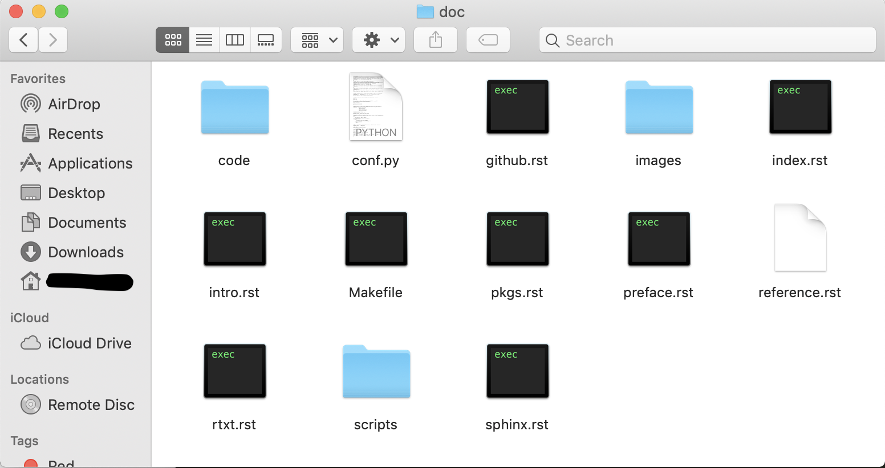
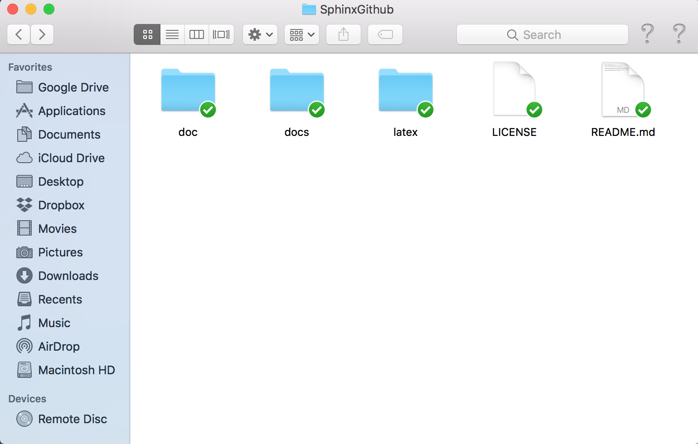

7. Publishing on Github¶
Chinese proverb
sharing your happiness is much better than enjoying your happiness by your own.
7.1. Create reStructuredTexts¶
7.1.1. Create reStructuredTexts¶
Use the tips in reStructuredText Markup to create your reStructuredTexts and add them in one folder, for example doc.

7.1.2. Add them in index.rst¶
========
Contents
========
.. toctree::
:maxdepth: 2
preface
intro
pkgs
sphinx
rtxt
github
reference
7.1.3. Compile the reStructuredTexts files¶
- Change the directory to the folder
cd MyTutorial/SphinxGithub/doc
- Compile
make
Then you should get two more folders: docs and latex.

7.2. Create Repository on Github¶

7.3. Commit reStructuredTexts folder to Repository¶
Open Terminal and do the following steps:
git init
git add .
# Adds the files in the local repository and stages them for commit. To unstage a file, use 'git reset HEAD YOUR-FILE'.
git commit -m "First commit"
# Commits the tracked changes and prepares them to be pushed to a remote repository. To remove this commit and modify the file, use 'git reset --soft HEAD~1' and commit and add the file again.
git remote add origin remote repository URL
# Sets the new remote
git remote -v
# Verifies the new remote URL
git push -u origin master
# Pushes the changes in your local repository up to the remote repository you specified as the origin